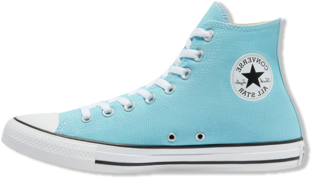
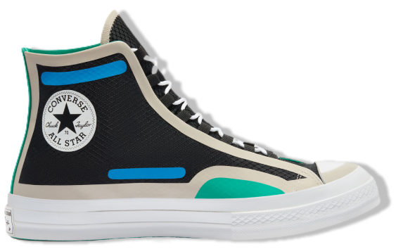
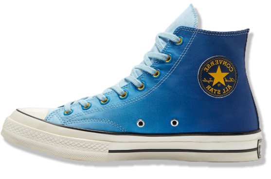

Converse Color
Chuck Taylor All Star
·Tênis de
lona de cano alto.
·Sola clássica de diamante.
·Novas cores por tempo limitado.
·Icônico tornozelo
Chuck Taylor.
·Palmilha OrthoLite para
amortecimento.

Digital Terrain
Chuck 70
·Superior ripstop robusto.
·Detalhe da fita de proteção
colorida.
·Placa vintage.
·O sistema de laço ghillie
protetor.
·Palmilha OrthoLite
para maior
conforto.

Heart of the
City Chuck 70
·O esquema de cores azul
da cultura das ruas e
Los Angeles.
·Sola de borracha maior
tração.
·Palmilha OrthoLite para
maior
conforto.
